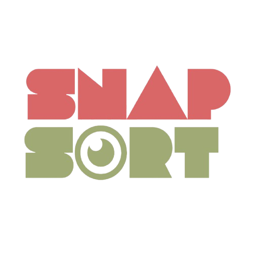
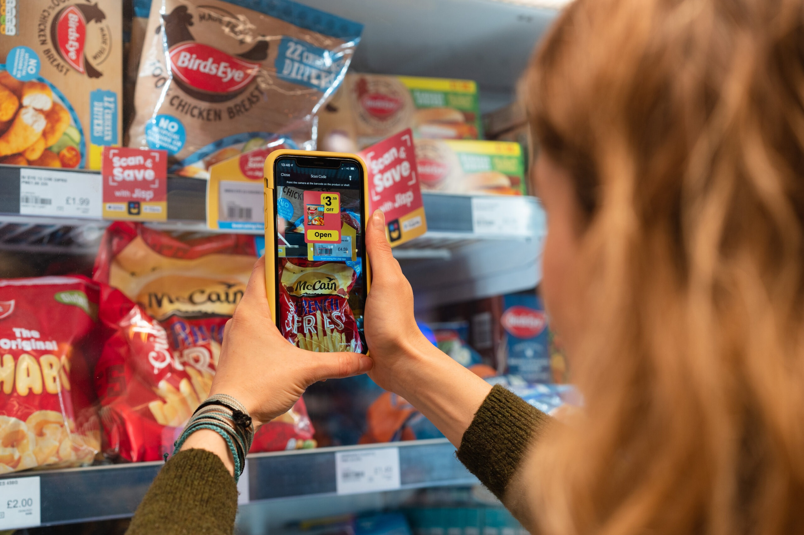
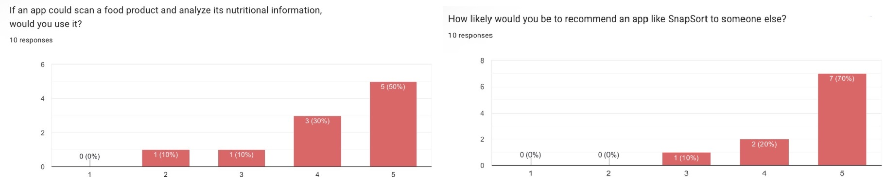

Snap SortThe value of the project goes beyond the application itself. It is about making food information easier to understand.
Snap Sort turns complicated food information into something more accessible.
By combining scanning, AI and structured nutrition information, the project aims to reduce the effort required to understand food products.

Users benefit from faster access to understandable food information.
Students, young adults and health-conscious consumers can use Snap Sort to better understand packaged food products.

Recognition may be affected by image quality, packaging design, lighting or unsupported products.
Results depend on the availability and quality of product and nutrition information.
Expand the supported product range and improve recognition performance.
Provide nutrition trends and dashboards based on a user's scan history.
Support more products, countries and food categories.
Future versions could connect with smart food-storage devices to monitor conditions such as temperature.
Replace these with the exact references actually used in the project.